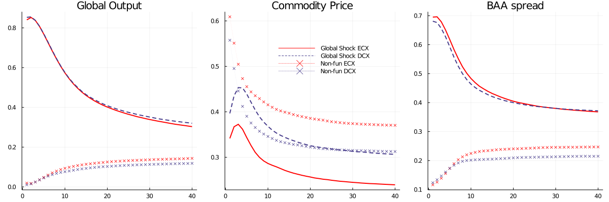

Global shocks ....
The first step to verify if commodity prices are reflecting and mostly in line with global fluctuations is to compare how these identified shocks explain the forecastability of the exogenous block. This comparison is showed in figure \ref{fig:gstoworld} that plots the contribution of each identified shock to the FEV on every external variable by country-group.
We can observe clearly that global shocks are the main source of predictability for real and financial variables in both groups, explaining around 30 percent of global production fluctuations and 37 percent of BAA-spread movements in the long run. The difference in participation is more drastic in the short run when fundamental global shocks drive world production predictability by around 85 percent instantaneously and 64 percent after 2 years. For the same variables, and in both groups, the non-fundamental commodity-related shock determines almost nothing in the short run, and as the discrepancies between the underlying drivers and the prices traded in the market settle down, their importance increases until 10 percent for DCXs and 15 percent for emerging markets for production, and 20 and 25 percent (respectively) on interest rates.
What happen with the forecastibility of terms of trade? In both groups the non-fundamental shock has a high explanation power in the short run being close to 55 percent for developed economies and 61 percent in emerging markets. In the case of DCXs, both innovations reach similar level of explanation power - around 30 percent, however for emerging economies there is a disconnection at this level, the global trends do not driving a large portion of commodities variations, determining one quarter in the long run, while non-fundamental shocks explain 40 percent.
I can drawn two consequences from these results:
An essential reason why countries should bother about distinguishing between these shocks are their effect in effective exchange rate, and real interest rates. When a global shock occurs, it appreciates the domestic currency, reducing then drastically in the following periods, differently, a persistent misalignment in commodity prices generates a continuous appreciation with longer half-life.
A last source of asymmetry between country groups comes from the effect on trade balance and real interest rates. For DCXs both shocks increase the trade balance, however for emerging markets it origins a reduction in the ratio net exports - GDP because the effect on investment (hence production) should be higher that the raising in net exports. In addition, the response of real interest rates are negative when the economies face a non fundamental shock, but positive in case of an innovation in global conditions.
Finally, \textit{what is dimension of misreporting of using commodity prices are proxy of global conditions?} To address it, I will calculate the difference between the impulse response of an identified global shock versus an \textit{identified} news-augmented terms of trade shock as in ZPV in every bayesian drawn that were used in the first part of the document.
Figure \ref{fig:compIRF} shows the median difference as well a 68 percent confidence bands. These differential are significant for emerging markets (left panel), but not for developed small open economies, due the tight connection (or low misalignment) between terms of trade and global conditions. It means that when we analyze an emerging small economy in our models we should not use only terms of trade as proxy of global conditions because they are not a sufficient statistic for global conditions
Global shocks ....
If you have any doubt, suggestions, or simply want to talk, you can contact with me.